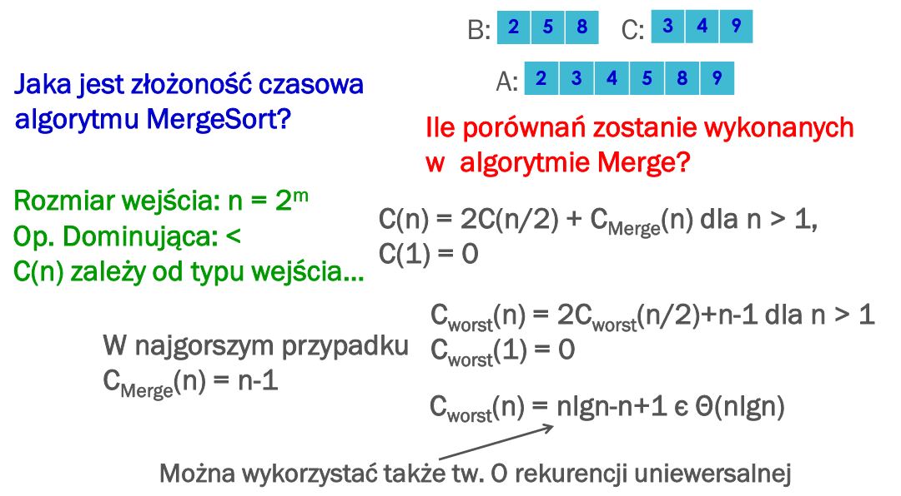

Krótki opis:
Rekurencyjny algorytm sortowania danych, stosujący metodę dziel i zwyciężaj. Odkrycie algorytmu przypisuje się Johnowi von Neumannowi.
Złożoność algorytmu wynosi n⋅log(n) , a więc jest on znacznie wydajniejszy niż sortowanie bąbelkowe,
przez wstawianie czy przez selekcję, gdzie złożoność jest kwadratowa.
Szczególnie jest przydatny zwłaszcza przy danych dostępnych sekwencyjnie (po kolei, jeden element naraz), na przykład w postaci listy jednokierunkowej
Szczególny opis:
Sortowanie wykorzystuje metodę „dziel i zwyciężaj”. Najważniejszym jej elementem jest scalanie.
Danymi wejściowymi jest naturalnie tablica liczb (lub dowolnych elementów, które można sortować, porównując ze sobą) o rozmiarze n.
Dla takiej tablicy wykonywane są trzy poniższe kroki:
-
Dziel: tablica jest dzielona na pół, czyli na dwie podtablice o rozmiarze n/2
-
Zwyciężaj: każda podtablica jest sortowana poprzez rekurencyjne wywołanie algorytmu z wyjątkiem tej o rozmiarze 1, którą siłą rzeczy jest od razu posortowana
-
Połącz: posortowane podtablice są następnie łączone w jedną posortowaną tablicę


